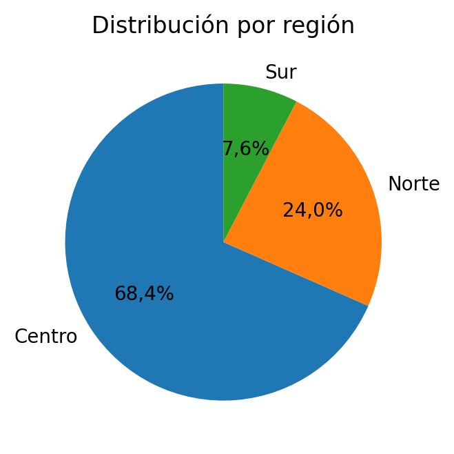

[GRI 2-7, 2-30, 3-3, 401-1, 401-2, 401-3, 403-1, 403-2, 403-4, 403-5, 403-6, 403-9, 403-10, 404-1, 404-2, 404-3, 405-1, 405-2, 406-1 | NIIF S1 — Estrategia y gestión de riesgos]
En 2025 fortalecimos nuestra gestión de talento humano con un enfoque orientado al bienestar, el desarrollo y la experiencia de nuestros colaboradores. En un entorno dinámico, priorizamos acciones que nos permitieron acompañar a nuestros equipos, promover condiciones laborales seguras y saludables, y consolidar una cultura basada en la confianza, la empatía y la corresponsabilidad.
Nuestra gestión se enfocó en tres líneas principales: bienestar integral, formación continua y conciliación entre la vida laboral, personal y familiar. A través de programas de salud física y mental, iniciativas de acompañamiento, espacios de aprendizaje y beneficios orientados a nuestros colaboradores y sus familias, impulsamos un entorno que favorece el crecimiento personal y profesional.
Estos esfuerzos reflejan nuestro compromiso con una cultura inclusiva y cercana, donde la escucha activa, la igualdad de oportunidades y el cuidado de las personas son elementos clave para fortalecer el sentido de pertenencia y contribuir al desarrollo sostenible de Banco Guayaquil.
Nuestro equipo diverso e inclusivo
[GRI 2-7, 3-3, 401-2, 401-3, 405-1, 405-2, 406-1]
La estrategia de equidad e inclusión de Banco Guayaquil forma parte integral de nuestra identidad organizacional y se sustenta en principios de ética, diversidad, igualdad de oportunidades, acceso y cumplimiento. A través de una gobernanza sólida y transparente, promovemos una cultura inclusiva y respetuosa, orientada a fortalecer la participación equitativa de nuestros colaboradores y a prevenir cualquier forma de discriminación. Este enfoque se complementa con políticas internas, programas de bienestar integral, mecanismos formales de cumplimiento normativo e iniciativas de inclusión financiera a nivel nacional, consolidando un modelo de banca responsable, humana y comprometida con el desarrollo sostenible del país.
Al cierre de 2025, contamos con 3.114 colaboradores, todos vinculados mediante contrato laboral. El 99,8 % de nuestra plantilla mantuvo contratos indefinidos y el 99,9 % laboró bajo modalidad de jornada completa, reflejando una estructura laboral estable, orientada al desarrollo profesional de largo plazo y al fortalecimiento de nuestra propuesta de valor para el talento.
En la siguiente tabla presentamos el desglose detallado de nuestro talento, según tipo de contrato y género, con corte a diciembre de 2025.
Desglose de la plantilla por tipo de contrato y género en 2025
| Tipo de Contrato | Mujeres | % Mujeres | Hombres | % Hombres | Total Tipo de Contrato | % Tipo de Contrato |
|---|---|---|---|---|---|---|
| Empleados fijos1 | 1.609 | 99,9 % | 1.499 | 99,7 % | 3.108 | 99,8 % |
| Empleados temporales2 | 2 | 0,1 % | 4 | 0,3 % | 6 | 0,2 % |
| Empleados por horas no garantizadas3 | 0 | 0,0 % | 0 | 0,0 % | 0 | 0,0 % |
| Empleados a tiempo completo | 1.611 | 100,0 % | 1.501 | 99,9 % | 3.112 | 99,9 % |
| Empleados a tiempo parcial | 0 | 0,0 % | 2 | 0,1 % | 2 | 0,1 % |
| Total | 1.611 | 100,0 % | 1.503 | 100,0 % | 3.114 | 100,0 % |
1. Empleado fijo: Empleado que tiene un contrato de trabajo por un periodo indeterminado (es decir, contrato indefinido).
2. Empleado temporal: Empleado con un contrato por un periodo limitado.
3. Empleado por horas no garantizadas: Empleado que no tiene asegurado un número mínimo o fijo de horas de trabajo por día, semana o mes, pero que posiblemente tenga que estar disponible para trabajar cuando sea necesario.
Nota: Las cifras de esta tabla se presentan como plantilla de personal y fueron extraídas de la base de datos de colaboradores activos con corte al 31 de diciembre de 2025, que consta en la plataforma Evolution de Banco Guayaquil (plataforma donde se registra a los colaboradores).
A continuación, compartimos el desglose de la plantilla por tipo de contrato y región, con corte a diciembre de 2025.
Desglose de la plantilla por tipo de contrato y región en 2025
| Tipo de Contrato | Centro | % Centro | Norte | % Norte | Sur | % Sur | Total Tipo de Contrato | % Tipo de Contrato |
|---|---|---|---|---|---|---|---|---|
| Empleados fijos1 | 2.125 | 99,8 % | 746 | 99,9 % | 237 | 99,6 % | 3.108 | 99,8 % |
| Empleados temporales2 | 4 | 0,2 % | 1 | 0,1 % | 1 | 0,4 % | 6 | 0,2 % |
| Empleados por horas no garantizadas3 | 0 | 0,0 % | 0 | 0,0 % | 0 | 0,0 % | 0 | 0,0 % |
| Empleados a tiempo completo | 2.127 | 99,9 % | 747 | 100,0 % | 238 | 100,0 % | 3.112 | 99,9 % |
| Empleados a tiempo parcial | 2 | 0,1 % | 0 | 0,0 % | 0 | 0,0 % | 2 | 0,1 % |
| Total | 2.129 | 100,0 % | 747 | 100,0 % | 238 | 100,0 % | 3.114 | 100,0 % |
1. Empleado fijo: Empleado que tiene un contrato de trabajo por un periodo indeterminado (es decir, contrato indefinido).
2. Empleado temporal: Empleado con un contrato por un periodo limitado.
3. Empleado por horas no garantizadas: Empleado que no tiene asegurado un número mínimo o fijo de horas de trabajo por día, semana o mes, pero que posiblemente tenga que estar disponible para trabajar cuando sea necesario.
Nota: Las cifras de esta tabla se presentan como plantilla de personal y fueron extraídas de la base de datos de colaboradores activos con corte al 31 de diciembre de 2025, que consta en la plataforma Evolution de Banco Guayaquil (plataforma donde se registra a los colaboradores).
Nuestra plantilla creció de 2.873 colaboradores al cierre de 2024 a 3.114 al cierre de 2025, un incremento neto de 241 personas equivalente al 8,4 %. Este crecimiento responde principalmente a posiciones aprobadas por la Dirección y a ajustes en la estructura organizacional. Es relevante señalar que, durante 2025, se realizó la transferencia de 60 colaboradores desde Banco Guayaquil a una empresa subsidiaria de la institución (no consolidada en este reporte); por tanto, el crecimiento de la plantilla refleja una expansión del personal aun considerando dicho movimiento.
A continuación, presentamos las cifras de diversidad de nuestro equipo, considerando variables como: género, categoría laboral, grupo de edad, región, discapacidad y nivel de estudios.
Desglose de la plantilla por género y categoría laboral en 2025
| Género | Estratégico | % Estratégico | Ejecutivo | % Ejecutivo | Táctico | % Táctico | Operativo | % Operativo | Total Género | % Género |
|---|---|---|---|---|---|---|---|---|---|---|
| Mujeres | 2 | 13,3 % | 132 | 49,4 % | 655 | 51,4 % | 822 | 52,8 % | 1.611 | 51,7 % |
| Hombres | 13 | 86,7 % | 135 | 50,6 % | 620 | 48,6 % | 735 | 47,2 % | 1.503 | 48,3 % |
| Total | 15 | 0,5 % | 267 | 8,6 % | 1.275 | 40,9 % | 1.557 | 50,0 % | 3.114 | 100,0 % |
La composición por género de nuestra plantilla mostró un equilibrio sostenido, con 1.611 mujeres (51,7 %) y 1.503 hombres (48,3 %). Esta distribución se mantiene de forma consistente en los distintos niveles organizacionales, con paridad en el nivel ejecutivo y una mayor representación femenina en los niveles táctico y operativo, en línea con nuestras políticas de Derechos Humanos y Diversidad.
Desglose de la plantilla por grupo de edad y categoría laboral en 2025
| Grupo de edad | Estratégico | % Estratégico | Ejecutivo | % Ejecutivo | Táctico | % Táctico | Operativo | % Operativo | Total Grupo de edad | % Grupo de edad |
|---|---|---|---|---|---|---|---|---|---|---|
| <30 años | 0 | 0,0 % | 16 | 6,0 % | 340 | 26,7 % | 703 | 45,2 % | 1.059 | 34,0 % |
| 30 - 50 años | 8 | 53,3 % | 210 | 78,7 % | 866 | 67,9 % | 776 | 49,8 % | 1.860 | 59,7 % |
| > 50 años | 7 | 46,7 % | 41 | 15,4 % | 69 | 5,4 % | 78 | 5,0 % | 195 | 6,3 % |
| Total | 15 | 0,5 % | 267 | 8,6 % | 1.275 | 40,9 % | 1.557 | 50,0 % | 3.114 | 100,0 % |
Desde una perspectiva etaria, el 59,7 % de los colaboradores se ubicó en el rango de 30 a 50 años, seguido por el grupo menor de 30 años (34 %) y por colaboradores mayores de 50 años (6,3 %), evidenciando una combinación equilibrada entre experiencia, continuidad operativa y renovación generacional.
A nivel territorial, nuestra fuerza laboral se concentró principalmente en la Región Centro (68,4 %), seguida por la Región Norte (24 %) y la Región Sur (7,6 %), en coherencia con la distribución geográfica de nuestras operaciones y puntos de atención a nivel nacional.

En 2025, el 100 % de los colaboradores que accedieron a licencias de maternidad y paternidad se reincorporó a sus funciones, alcanzando un índice de retención del 99,3 % al cierre del año. Asimismo, no se registraron casos confirmados de discriminación que hayan derivado en sanciones disciplinarias, y las alertas recibidas fueron gestionadas conforme a los protocolos internos vigentes.
Licencias de maternidad y paternidad: acceso, uso y reincorporación en 2025
| Indicador | Hombres | Mujeres | Total |
|---|---|---|---|
| Derecho a licencia parental | 73 | 66 | 139 |
| Ejercieron el derecho | 73 | 66 | 139 |
| Se reincorporaron | 73 | 66 | 139 |
| Índice de reincorporación | 100,0 % | 100,0 % | 100,0 % |
| Retención al cierre de 2025 | 100,0 % | 98,5 % | 99,3 % |
Desglose de la plantilla por categoría de estudios y categoría laboral en 2025
| Categoría de estudios | Estratégico | % Estratégico | Ejecutivo | % Ejecutivo | Táctico | % Táctico | Operativo | % Operativo | Total Categoría de estudios | % Categoría de estudios |
|---|---|---|---|---|---|---|---|---|---|---|
| Postgrado | 9 | 60,0 % | 84 | 31,5 % | 125 | 9,8 % | 19 | 1,2 % | 237 | 7,6 % |
| Superior | 6 | 40,0 % | 153 | 57,3 % | 770 | 60,4 % | 663 | 42,6 % | 1.592 | 51,1 % |
| Secundaria | 0 | 0,0 % | 30 | 11,2 % | 380 | 29,8 % | 875 | 56,2 % | 1.285 | 41,3 % |
| Total | 15 | 0,5 % | 267 | 8,6 % | 1.275 | 40,9 % | 1.557 | 50,0 % | 3.114 | 100,0 % |
La diversidad de nuestra plantilla también se reflejó en su composición por categoría de estudios: el 51,1 % de los colaboradores cuenta con estudios superiores, el 41,3 % con formación secundaria y el 7,6 % con estudios de posgrado.
Desglose de los colaboradores con discapacidad por género y categoría laboral en 2025
| Género | Estratégico | % Estratégico | Ejecutivo | % Ejecutivo | Táctico | % Táctico | Operativo | % Operativo | Total colaboradores con discapacidad | % Colabores con discapacidad con respecto al total |
|---|---|---|---|---|---|---|---|---|---|---|
| Mujeres | 0 | 0,0 % | 4 | 57,1 % | 17 | 65,4 % | 48 | 65,8 % | 69 | 65,1 % |
| Hombres | 0 | 0,0 % | 3 | 42,9 % | 9 | 34,6 % | 25 | 34,2 % | 37 | 34,9 % |
| Total | 0 | 0,0 % | 7 | 6,6 % | 26 | 24,5 % | 73 | 68,9 % | 106 | 100,0 % |
Además, contamos con 106 colaboradores con discapacidad, equivalentes al 3,4 % de la plantilla, con una mayor participación femenina correspondiente al 65,1 % de dichos colaboradores.
Porcentaje de participación femenina en áreas STEM en 2025
| Indicador | % Participación |
|---|---|
| Mujeres en Tecnología, Productos, Innovación y Analítica sobre total Banco | 8,0 % |
| Mujeres sobre la población total de esas áreas | 36,4 % |
De manera complementaria, fortalecimos la participación de mujeres en áreas STEM y digitales: las mujeres en Tecnología, Productos, Innovación y Analítica representaron el 8 % del total del Banco y el 36,4 % de la población total de dichas áreas.
Equidad salarial y compensación responsable
[GRI 405-2 | NIIF S1 — Estrategia y gestión de riesgos]
Nuestra gestión de compensaciones se sustenta en metodologías de valoración de cargos y criterios de responsabilidad, alcance y desempeño. La relación salarial mujer/hombre se monitorea por región y categoría, con el objetivo de identificar brechas, analizar sus causas y fortalecer decisiones de equidad.
Ratio salarial mujer/hombre por región y categoría laboral en 2025
| Región / categoría | Ratio salario base M/H | Ratio remuneración total M/H |
|---|---|---|
| Centro - Ejecutivo | 0,92 | 0,78 |
| Centro - Táctico | 0,98 | 0,89 |
| Centro - Operativo | 1,06 | 1,03 |
| Norte - Ejecutivo | 1,23 | 1,07 |
| Norte - Táctico | 1,24 | 1,20 |
| Norte - Operativo | 1,38 | 1,42 |
| Sur - Ejecutivo | 1,20 | 1,47 |
| Sur - Táctico | 1,76 | 1,81 |
| Sur - Operativo | 0,87 | 0,88 |
Asimismo, gestionamos esquemas de remuneración variable vinculados al desempeño comercial bajo principios de transparencia y alineación con los objetivos estratégicos del Banco. En 2025, la remuneración variable asociada a roles de venta directa representó el 5,6 % de la remuneración total, manteniéndose en niveles consistentes respecto al año anterior.
Remuneración variable - comparación 2024 - 2025
| Indicador | 2024 | 2025 |
|---|---|---|
| Remuneración total empleados con rol de venta directa | US$ 48.839.795,00 | US$ 57.269.395,52 |
| Remuneración variable vinculada a ventas | US$ 2.656.544,58 | US$ 3.212.555,02 |
| Colaboradores con rol de venta directa | 1.219 | 1.076 |
| Porcentaje de remuneración variable | 5,4 % | 5,6 % |
Convenios de negociación colectiva
[GRI 2-30]
Garantizamos el derecho a la libertad de asociación y a la negociación colectiva, en cumplimiento de la normativa laboral ecuatoriana y de los estándares internacionales aplicables. En relación con esto, durante 2025, el 99,8 % de nuestros colaboradores estuvo cubierto por el Vigésimo Séptimo Contrato Colectivo de Trabajo, correspondientes a 3.108 colaboradores.
Respecto a los colaboradores no cubiertos por este contrato, corresponden a 6 empleados temporales (eventuales) que constituyen el 0,2 % de nuestra plantilla y que, al no tener la condición de trabajadores estables, no se encuentran comprendidos en el ámbito de aplicación del contrato colectivo, de conformidad con sus disposiciones fundamentales. Sus condiciones laborales y términos de empleo se rigen por contratos individuales de trabajo, el Reglamento Interno de la institución y el Código del Trabajo, sin tomar en consideración convenios de negociación colectiva de otras organizaciones.
Desglose de plantilla cubierta por el contrato colectivo de trabajo en 2025
| Tipo de colaboradores | No. colaboradores | % Colaboradores respecto al total |
|---|---|---|
| Colaboradores cubiertos por el contrato colectivo | 3.108 | 99,8% |
| Colaboradores no cubiertos por el contrato colectivo | 6 | 0,2% |
| Total | 3.114 | 100,0% |
Nota: Las cifras de esta tabla se presentan como plantilla de personal y fueron extraídas de la base de datos de colaboradores activos con corte al 31 de diciembre de 2025, que consta en la plataforma Evolution de Banco Guayaquil (plataforma donde se registra a los colaboradores).
El contrato colectivo vigente establece beneficios que superan los establecidos en la normativa aplicable, incluyendo:
Cobertura del 70 % del costo del seguro médico privado;
Pago del 100 % de la remuneración en casos de enfermedad con ausencias superiores a tres días;
Beneficios de fin de año;
Mochila escolar y útiles para hijos de colaboradores entre los 3 y 17 años, y
Compensación económica en caso de fallecimiento del colaborador.
Este documento tiene una vigencia de cinco años, comprendida entre el 1 de febrero de 2025 y el 31 de enero de 2030, y se encuentra suscrito con la Asociación Nacional de Empleados de Banco Guayaquil, conforme al Convenio 98 de la OIT y la normativa nacional, incluyendo los siguientes cuerpos legales:
Constitución de la República del Ecuador;
Código del Trabajo, y
Acuerdo Ministerial MDT-2024-080, Reglamento para la Presentación, Negociación y Suscripción de Contratos Colectivos de Trabajo y Actas Transaccionales.
Atracción y retención del talento
[GRI 401-1]
Durante 2025 fortalecimos nuestra gestión de atracción y retención de talento mediante procesos de selección, contratación, movilidad y desvinculación alineados con la Política para la Administración del Talento y Cultura, la Política de Derechos Humanos y la normativa laboral vigente.
Incorporamos 529 nuevos colaboradores, alcanzando una tasa de contratación del 17,0 %. Del total de ingresos, el 54,6 % correspondió a personas menores de 30 años, lo que contribuye al relevo generacional y a la renovación de capacidades dentro del Banco. La incorporación de personal se realizó bajo criterios de igualdad de oportunidades, con una participación de 241 mujeres, equivalentes al 45,6 %, y 288 hombres, equivalentes al 54,4 %.
Desglose de contrataciones de nuevos colaboradores por grupo de edad y género en 2025
| Grupo de Edad | No. Contrataciones Mujeres | % Contrataciones Mujeres | No. Contrataciones Hombres | % Contrataciones Hombres | Total Contrataciones Grupo de Edad | Total Colaboradores Grupo de Edad1 | Tasa de Contratación Grupo de Edad2 |
|---|---|---|---|---|---|---|---|
| < 30 años | 145 | 60,2 % | 144 | 50,0 % | 289 | 1.059 | 27,3 % |
| 30 - 50 años | 94 | 39,0 % | 138 | 47,9 % | 232 | 1.860 | 12,5 % |
| > 50 años | 2 | 0,8 % | 6 | 2,1 % | 8 | 195 | 4,1 % |
| Total Contrataciones Género | 241 | 45,6 % | 288 | 54,4 % | 529 | - | 17,0 % |
| Total Colaboradores Género3 | 1.611 | 51,7 % | 1.503 | 48,3 % | - | 3.114 | - |
| Tasa de Contratación Género4 | 15,0 % | - | 19,2 % | - | 17,0 % | - | - |
1. Total de colaboradores del banco en el correspondiente grupo de edad con corte al 31 de diciembre de 2025.
2. Tasa de Contratación Grupo de Edad = (No. Contrataciones por Grupo de Edad / Total de colaboradores por Grupo de Edad) * 100 %
3. Total de colaboradores del banco en el correspondiente género con corte al 31 de diciembre de 2025.
4. Tasa de Contratación Género = (No. Contrataciones por Género / Total de colaboradores por Género) * 100 %
Desglose de contrataciones de nuevos colaboradores por región y género en 2025
| Región | No. Contrataciones Mujeres | % Contrataciones Mujeres | No. Contrataciones Hombres | % Contrataciones Hombres | Total Contrataciones Región | Total Colaboradores Región1 | Tasa de Contratación Región2 |
|---|---|---|---|---|---|---|---|
| Centro | 162 | 67,2 % | 208 | 72,2 % | 370 | 2.129 | 17,4 % |
| Norte | 61 | 25,3 % | 56 | 19,4 % | 117 | 747 | 15,7 % |
| Sur | 18 | 7,5 % | 24 | 8,3 % | 42 | 238 | 17,6 % |
| Total Contrataciones Género | 241 | 45,6 % | 288 | 54,4 % | 529 | - | 17,0 % |
| Total Colaboradores Género3 | 1.611 | 51,7 % | 1.503 | 48,3 % | - | 3.114 | - |
| Tasa de Contratación Género4 | 15,0 % | - | 19,2 % | - | 17,0 % | - | - |
1. Total de colaboradores del banco en la correspondiente región con corte al 31 de diciembre de 2025.
2. Tasa de Contratación Región = (No. Contrataciones por Región / Total de colaboradores por Región) * 100 %
3. Total de colaboradores del banco en el correspondiente género con corte al 31 de diciembre de 2025.
4. Tasa de Contratación Género = (No. Contrataciones por Género / Total de colaboradores por Género) * 100 %
En términos de retención, registramos 292 bajas, equivalentes a una tasa de rotación del 9,4 %. Por género, las desvinculaciones se distribuyeron de forma equilibrada: 154 mujeres y 138 hombres. Por grupo etario, el mayor número de bajas correspondió al rango de 30 a 50 años, con 168 casos, mientras que la mayor tasa de bajas se presentó en colaboradores mayores de 50 años, con 14,4 %.
Desglose de bajas por grupo de edad y género en 2025
| Grupo de Edad | No. Bajas Mujeres | % Bajas Mujeres | No. Bajas Hombres | % Bajas Hombres | Total Bajas Grupo de Edad | Total Colaboradores Grupo de Edad1 | Tasa de Bajas Grupo de Edad2 |
|---|---|---|---|---|---|---|---|
| < 30 años | 52 | 33,8 % | 44 | 31,9 % | 96 | 1.059 | 9,1 % |
| 30 - 50 años | 89 | 57,8 % | 79 | 57,2 % | 168 | 1.860 | 9,0 % |
| > 50 años | 13 | 8,4 % | 15 | 10,9 % | 28 | 195 | 14,4 % |
| Total Bajas Género | 154 | 52,7 % | 138 | 47,3 % | 292 | - | 9,4 % |
| Total Colaboradores Género3 | 1.611 | 51,7 % | 1.503 | 48,3 % | - | 3.114 | - |
| Tasa de Bajas Género4 | 9,6 % | - | 9,2 % | - | 9,4 % | - | - |
1. Total de colaboradores del banco en el correspondiente grupo de edad con corte al 31 de diciembre de 2025.
2. Tasa de Bajas Grupo de Edad = (No. Bajas por Grupo de Edad / Total de colaboradores por Grupo de Edad) * 100 %
3. Total de colaboradores del banco en el correspondiente género con corte al 31 de diciembre de 2025.
4. Tasa de Bajas Género = (No. Bajas por Género / Total de colaboradores por Género) * 100 %
Desglose de bajas por región y género en 2025
| Región | No. Bajas Mujeres | % Bajas Mujeres | No. Bajas Hombres | % Bajas Hombres | Total Bajas Región | Total Colaboradores Región1 | Tasa de Bajas Región2 |
|---|---|---|---|---|---|---|---|
| Centro | 83 | 53,9 % | 72 | 52,2 % | 155 | 2.129 | 7,3 % |
| Norte | 55 | 35,7 % | 44 | 31,9 % | 99 | 747 | 13,3 % |
| Sur | 16 | 10,4 % | 22 | 15,9 % | 38 | 238 | 16,0 % |
| Total Bajas Género | 154 | 52,7 % | 138 | 47,3 % | 292 | - | 9,4 % |
| Total Colaboradores Género3 | 1.611 | 51,7 % | 1.503 | 48,3 % | - | 3.114 | - |
| Tasa de Bajas Género4 | 9,6 % | - | 9,2 % | - | 9,4 % | - | - |
1. Total de colaboradores del banco en la correspondiente región con corte al 31 de diciembre de 2025.
2. Tasa de Bajas Región = (No. Bajas por Región / Total de colaboradores por Región) * 100 %
3. Total de colaboradores del banco en el correspondiente género con corte al 31 de diciembre de 2025.
4. Tasa de Bajas Género = (No. Bajas por Género / Total de colaboradores por Género) * 100 %
La gestión de bajas se realizó conforme a los procesos internos de desvinculación, que incluyen el registro en los sistemas del Banco, la notificación correspondiente a las áreas de control, la gestión de accesos, la coordinación de evaluaciones médicas postocupacionales cuando aplica y el cumplimiento de las obligaciones laborales ante las entidades competentes.
Beneficios, conciliación y experiencia laboral
[GRI 401-2, 401-3 | NIIF S1 — Estrategia y gestión de riesgos]
Desarrollamos una propuesta de valor integral que combina bienestar, flexibilidad, salud, protección económica, apoyo a la familia, formación, reconocimiento y sentido de pertenencia. Estos beneficios están orientados a fortalecer la calidad de vida, el compromiso y la permanencia de nuestros colaboradores.
Beneficios para los colaboradores por eje
| Eje de beneficio | Ejemplos |
|---|---|
| Bienestar y salud | Servicio médico, seguro médico privado con aporte del Banco, convenios de salud, asistencia psicológica, coaching saludable, clubes deportivos, carreras y caminatas saludables. |
| Familia y conciliación | Kit para recién nacidos, bono de maternidad/paternidad, bono de guardería, útiles escolares, club materno y paterno, programas para hijos y apoyo parental. |
| Flexibilidad laboral | Modalidades flexibles, home office, móvil y presencial; flex time, banco de horas y tarjeta de conectividad. |
| Desarrollo y educación | Campus BG, Ruta Digital, vacantes internas, becas de pregrado y posgrado, bono/subsidio de matrícula y convenios educativos. |
| Protección económica | Beneficios por fallecimiento o invalidez, acreditación del 100 % del sueldo en enfermedad o maternidad, fondo de pertenencia y anticipos/créditos internos. |
| Cultura y reconocimiento | Reconocimientos por trayectoria, Primero Unidos, actividades de integración, cena navideña y programas de pertenencia. |
Número de colaboradores por modalidad de trabajo en 2025
| Modalidad | No. Colaboradores | Porcentaje (%) |
|---|---|---|
| Flexible | 1.297 | 41,65 % |
| Home office | 61 | 1,96 % |
| Movil | 753 | 24,18 % |
| Presencial | 1.003 | 32,21 % |
| Total | 3.114 | 100,00 % |
Resultados de cultura organizacional
La Encuesta GPTW 2025 evidenció altos niveles de confianza, orgullo y conexión con nuestra cultura. Estos resultados reflejan el impacto de una gestión basada en escucha, cercanía, bienestar y desarrollo.
Las encuestas de cultura organizacional evidencian el impacto positivo de esta cultura:
96 % de los colaboradores considera a Banco Guayaquil un gran lugar para trabajar.
94 % de índice de Cultura BG, reflejando una fuerte identificación con nuestros valores y forma de actuar.
98 % de los colaboradores manifiesta sentirse orgulloso de trabajar en el banco y de los logros alcanzados como organización.
91 % destaca las oportunidades de desarrollo y capacitación para crecer profesionalmente.
96 % reconoce que la seguridad, salud, bienestar y compromiso con la comunidad son una prioridad dentro del banco.
97 % considera que la forma en que actuamos como organización refleja claramente nuestra cultura y propósito.
Capacitación, desempeño y desarrollo de carrera
[GRI 404-1, 404-2, 404-3]
Formación anual por colaborador
[GRI 404-1]
Impulsamos el desarrollo del talento a través de un sistema integral de capacitación y aprendizaje continuo que abarca todas las categorías laborales del Banco. En 2025, formamos a 3.371 colaboradores, acumulando 118.913,4 horas de capacitación, con un promedio de 35,3 horas por colaborador. De ese total, 1.739 mujeres registraron un promedio de 35,3 horas/mujer y 1.632 hombres, un promedio de 35,2 horas/hombre, reflejando una distribución equitativa del esfuerzo formativo entre géneros.
Promedio de horas de formación al año por colaborador según categoría laboral y género en 2025
| Categoría laboral | No. de participantes | No. total de horas de capacitación | Cantidad de horas / participante | No. de mujeres | No. total de horas de capacitación mujeres | Cantidad de horas / mujer | No. de hombres | No. total de horas de capacitación hombres | Cantidad de horas / hombre |
|---|---|---|---|---|---|---|---|---|---|
| Operativos | 1.700 | 53.433,6 | 31,4 | 889 | 28.013,2 | 31,5 | 811 | 25.420,4 | 31,3 |
| Tácticos | 1.370 | 52.049,0 | 38,0 | 706 | 26.982,1 | 38,2 | 664 | 25.066,9 | 37,8 |
| Ejecutivos | 282 | 13.028,7 | 46,2 | 141 | 6.337,8 | 44,9 | 141 | 6.690,9 | 47,5 |
| Estratégicos | 19 | 402,1 | 21,2 | 3 | 62,0 | 20,7 | 16 | 340,1 | 21,3 |
| Total1 | 3.371 | 118.913,4 | 35,3 | 1.739 | 61.395,1 | 35,3 | 1.632 | 57.518,3 | 35,2 |
1. El total de colaboradores referido en esta tabla (3.371) corresponde a los colaboradores formados en 2025, y no está relacionado con el número total de colaboradores al 31 de diciembre de 2025.
Programas para desarrollar las competencias de los colaboradores
[GRI 404-2]
Nuestra estrategia formativa integra programas de liderazgo, formación técnica y digital, movilidad interna, planes de sucesión y becas de estudio, fortaleciendo las competencias actuales y futuras del equipo y asegurando la continuidad operativa y el crecimiento profesional dentro del Banco. Entre las iniciativas más relevantes ejecutadas en 2025 se detallan las siguientes:
Programas e iniciativas para desarrollo de competencias de colaboradores en 2025
| Programa / iniciativa | Tema | Participantes | No. de horas | Modalidad |
|---|---|---|---|---|
| Liderazgo | Liderando la transformación | 70 | 20 | Virtual |
| Liderazgo mujeres | Programa de liderazgo mujeres - IDE | 50 | 18 | Presencial |
| Ruta digital | Excel básico-intermedio | 2.410 | 6 | E-learning |
| Ruta digital | Power BI introductorio-básico | 2.392 | 3 | E-learning |
| Ruta digital | Simulador Mindset digital | 2.378 | 1 | E-learning |
| Mentoría y feedback | Taller Feedforward | 225 | 2 | Virtual |
| Mentoría y feedback | Taller Focus Mentoring | 149 | 2 | Virtual |
Evaluación del desempeño y desarrollo de carrera
[GRI 404-3]
Nuestra metodología de evaluación de desempeño se basa en un modelo 360° que considera competencias organizacionales, aplicada anualmente a través de nuestro Portal de Autoatención del Talento, con la participación de tres actores:
Autoevaluación: el colaborador reflexiona sobre su desempeño y valora sus competencias y tareas críticas del cargo.
Jefe inmediato: evalúa el desempeño del colaborador en relación con sus competencias, tareas críticas y contribución a resultados.
Evaluador adicional: aporta una perspectiva complementaria sobre la colaboración, interacción y trabajo en equipo del colaborador.
Porcentaje de empleados que reciben evaluaciones periódicas de desempeño y desarrollo de carrera por género y categoría laboral en 2025
| Género | Estratégico | % Estratégico | Ejecutivo | % Ejecutivo | Táctico | % Táctico | Operativo | % Operativo | Total Género | % Género |
|---|---|---|---|---|---|---|---|---|---|---|
| Mujeres | 1 | 6,7 % | 120 | 51,7 % | 569 | 54,3 % | 726 | 51,4 % | 1.416 | 52,31 % |
| Hombres | 14 | 93,3 % | 112 | 48,3 % | 478 | 45,7 % | 687 | 48,6 % | 1.291 | 47,69 % |
| Total Categoría | 15 | 0,6 % | 232 | 8,6 % | 1.047 | 38,7 % | 1.413 | 52,2 % | 2.707 | 100 % |
Nota: En 2025 se reportaron 2.707 evaluaciones de desempeño y desarrollo de carrera, equivalentes al 86,9 % de los 3.114 colaboradores registrados con corte al 31 de diciembre de 2025.
Plan de sucesión
Nuestro proceso de sucesión identifica cargos críticos y colaboradores con potencial de reemplazo, considerando desempeño, experiencia y proyección. El proceso contempla calibración ejecutiva con Vicepresidencias, definición de Planes de Desarrollo Individual y seguimiento periódico por Talento Humano, con el fin de asegurar continuidad operativa y fortalecer la promoción interna.
Seguridad, salud y bienestar
[GRI 403-1, 403-2, 403-4, 403-5, 403-6, 403-9, 403-10 | NIIF S1 — Gestión de riesgos]
La seguridad, la salud y el bienestar de quienes trabajan con nosotros son parte central de nuestra cultura. Contamos con un Sistema de Gestión de Seguridad y Salud en el Trabajo (SST), denominado “Sistema de Gestión de Organización Saludable (SIGOS)” basado en ISO 45001 y en la normativa nacional y regional aplicable, incluyendo el Reglamento de Seguridad y Salud en el Trabajo (Decreto Ejecutivo No. 255, 2024).
Este sistema incluye identificación de peligros y evaluación de riesgos, controles operativos, formación, vigilancia de la salud, promoción del bienestar y mejora continua. Su alcance cubre a directores y colaboradores, se extiende a contratistas y proveedores bajo nuestro control, así como a clientes y visitantes durante su permanencia en nuestras instalaciones.
Bienestar físico, mental y familiar
[GRI 403-6 | NIIF S1 — Estrategia y gestión de riesgos]
Durante 2025 impulsamos programas de vigilancia de la salud, apoyo psicológico, actividades deportivas y culturales, acompañamiento nutricional y medidas ergonómicas orientadas a mejorar la calidad de vida de los colaboradores y sus familias.
Programas relacionados con la salud y bienestar de los colaboradores ejecutados en 2025
| Programa | Resultado 2025 |
|---|---|
| Vigilancia de la salud | Cobertura del 99 % de colaboradores y 100 % en agencias y sucursales, según información de gestión reportada. |
| Mente saludable | 272 atenciones psicológicas a colaboradores y familiares; 600 asistentes en charlas de salud y bienestar. |
| Clubes deportivos y culturales | 1.459 colaboradores participantes a nivel nacional. |
| Carreras saludables | 849 colaboradores participantes y 4.245 km recorridos. |
| Caminata familiar | 533 personas entre colaboradores y familiares. |
| Coaching saludable | Consultas nutricionales y sesiones de coaching en Región Sur. |
| Ergonomía | 989 equipos y accesorios ergonómicos entregados. |
Recursos tecnológicos para la gestión de SST
La incorporación de herramientas tecnológicas permite optimizar procesos, asegurar el cumplimiento normativo, fortalecer la trazabilidad de inspecciones y auditorías, y facilitar la capacitación continua de colaboradores y proveedores. En 2025 avanzamos en la modernización de la gestión mediante tres soluciones clave.
Soluciones para la gestión de SST
| Moodle | Diligent | Soporte Conecta |
|---|---|---|
| Plataforma para la formación de proveedores en prevención de riesgos laborales. | Herramienta para la gestión operativa, seguimiento de inspecciones, auditorías, control de planes de acción y certificaciones. | Herramienta para la gestión operativa de asignación de accesorios ergonómicos y mobiliario para estaciones de trabajo. |
Para 2026 se proyecta implementar NEXO, una herramienta tecnológica de gestión de SST que permitirá mantener la información ordenada y centralizada para reportes a la alta dirección, auditorías y organismos regulatorios. Esta implementación contempla la migración desde Evolution y la integración con HCM.
Identificación de peligros, evaluación de riesgos e investigación de incidentes
[GRI 403-2 | NIIF S1 — Gestión de riesgos]
Identificación de peligros relacionados con el trabajo, evaluación de riesgos y aplicación de la jerarquía de controles
[GRI 403-2, 403-9 | NIIF S1 — Gestión de riesgos]
Realizamos la identificación de los peligros presentes en el trabajo y sus posibles consecuencias, con la finalidad de prevenir accidentes de trabajo y enfermedades profesionales, a través de un proceso sistemático especificado en el Reglamento Interno de Higiene y Seguridad en el Trabajo y sustentado en la normativa laboral aplicable, incluido el Decreto Ejecutivo No. 255.
Con base en los peligros identificados y priorizados, realizamos la medición de los riesgos al menos una vez al año, aplicando metodologías reconocidas y validadas según el tipo de factor de riesgo:
Metodologías aplicadas por tipo de riesgo
| Tipo de riesgo | Metodología |
|---|---|
| Mecánico | William W. Fine y/o triple criterio INSHT-España. |
| Físico | Aparatos de lectura. |
| Químico | Evaluación de exposición por inhalación y normas NTP. |
| Biológico | Toma y análisis de muestras y normas INEN. |
| Ergonómico | RULA, LEST, NIOSH, OWAS y RENAULT. |
| Psicosocial | ISTAS 21, FPSICO (v4.1) y encuestas demostrativas. |
Para eliminar peligros y minimizar riesgos aplicamos la jerarquía de control en tres niveles:
Control en la fuente: identificación del riesgo en la raíz, considerando el cambio o modificación de equipos y/o procesos.
Control en el medio: una vez definidos los riesgos se adquieren y/o adaptan equipos o medios de atenuación o eliminación del riesgo.
Control en el receptor: se dota al colaborador del EPP adecuado y capacitación, para minimizar el impacto del riesgo.
Resultados de la evaluación de riesgos
En la última actualización de la Matriz de Riesgos Laborales, Banco Guayaquil identificó que el 77 % de los riesgos a los que están expuestos nuestros colaboradores se clasifican como tolerables y el 23 % como moderados, lo que representa un nivel aceptable de riesgo.
Se evidenció mayor incidencia en factores ergonómicos, de seguridad y psicosociales durante el año 2025. Para esto se realizan mediciones a los puestos de trabajo, encuestas, inspecciones y, en caso de trabajos especiales, se revisa el procedimiento de trabajo. A su vez, de requerir algún control administrativo se realiza una reingeniería del proceso conforme a la jerarquía de control de riesgos.
Complementariamente, se ha definido una estrategia y un plan de acción para abordar los factores de riesgo y fortalecer la gestión preventiva.
Además, fortalecimos la Matriz de Riesgos Laborales, se evaluaron cargos clave como ventanilla, Contact Center VIP, gestores de campo, mensajería, mantenimiento técnico, producción multimedia, marketing digital e investigación y diseño.
Calidad de los procesos, evaluación y mejora continua
Para asegurar la calidad de los procesos referidos, nuestra área responsable de SST adopta los siguientes principios y prácticas de gestión:
| Planificación | Ejecución y evaluación | Seguimiento y mejora continua |
|---|---|---|
|
|
|
Competencias de las personas encargadas
Banco Guayaquil establece un programa anual de capacitación a todos los colaboradores en materia de prevención de riesgos, en función de los factores de riesgo identificados y su prioridad. Los contratistas y el personal de nuevo ingreso reciben además una capacitación sobre el Protocolo de Bioseguridad vigente en el Banco.
Notificación de peligros o situaciones de peligro laborales
[GRI 403-2 | NIIF S1 — Gestión de riesgos]
Nuestros colaboradores pueden notificar de forma oportuna cualquier situación de trabajo que pudiera representar peligros para su vida, su integridad personal o su salud, comunicándolas a sus instancias superiores.
Además, contamos con mecanismos orales y escritos, que garantizan la confidencialidad y la protección de los denunciantes contra represalias, entre ellos:
Mecanismos de protección contra represalias
| Mecanismo | Alcance |
|---|---|
| Línea de ética | Disponible para todos los colaboradores en el portal interno, a través del cual se garantiza confidencialidad e integridad del denunciante. |
| Protocolo de Prevención y Atención de Casos de Discriminación, Acoso Laboral y toda forma de Violencia en los Espacios de Trabajo | Permite gestionar situaciones de riesgo, acoso, discriminación o violencia laboral bajo principios de confidencialidad, no represalia y debido proceso. Los colaboradores lo pueden realizar por medio del buzón de SST: sso@bancoguayaquil.com. |
Complementariamente, los colaboradores pueden optar por notificar estos particulares a los Gerentes o Vicepresidente del área de Talento y Cultura.
Retiro de situaciones laborales que pudieran provocar lesiones, dolencias o enfermedades
[GRI 403-2 | NIIF S1 — Gestión de riesgos]
Los colaboradores deben informar oportunamente a sus superiores, sobre cualquier dolencia que sufran y que presuman que se haya originado como consecuencia de las labores que realizan, o de las condiciones y el ambiente de trabajo; así como de cualquier dolencia que sufran y ponga en riesgo su salud, así como la de los demás colaboradores y clientes de la institución.
A su vez, los colaboradores tienen el derecho a suspender sus actividades debido a la presencia de condiciones y acciones subestándares, que pongan en riesgo su seguridad o la de otros colaboradores, sin sufrir perjuicio alguno. Al respecto, los mecanismos que aseguran su protección contra represalias corresponden a los citados en la sección anterior.
Investigación de incidentes laborales
[GRI 403-2 | NIIF S1 — Gestión de riesgos]
La investigación y registro de incidentes laborales es liderada por la Unidad de Seguridad y Salud en el Trabajo, junto con los responsables de Prevención de Riesgos Laborales de cada sitio de trabajo y las áreas involucradas.
Dichos responsables mantienen un registro de los resultados de las evaluaciones de riesgos y de las medidas de control propuestas, asegurando la disponibilidad de esta información para las autoridades competentes y los colaboradores.
Este proceso se sustenta en el Decreto Ejecutivo No. 255 y en el Reglamento del Instrumento Andino de Seguridad y Salud en el Trabajo (Resolución 957).
Al respecto, para identificar los peligros y evaluar los riesgos relacionados con los incidentes laborales, se realiza lo descrito en la sección 7.8.3.1 del presente reporte.
Con respecto al proceso para determinar las acciones correctivas y las mejoras necesarias del Sistema de Gestión de SST con respecto a los incidentes laborales, se analiza el funcionamiento, la efectividad y el cumplimiento de las medidas de protección, para determinar y ajustar sus deficiencias. Además, se aplican los principios y prácticas de gestión mencionados en la descripción de Calidad de los procesos, evaluación y mejora continua de la sección 7.8.3.1 de este documento.
Preparación ante emergencias y riesgos mayores
[GRI 403-1 | NIIF S1 — Gestión de riesgos]
En 2025, en el marco de nuestro Plan de Gestión de Riesgos de Seguridad y Salud en el Trabajo, reforzamos las capacidades de colaboradores, brigadistas y líderes para responder ante escenarios críticos, alineando la formación con los factores de riesgo identificados y su prioridad dentro del sistema. La capacitación abordó gestión y respuesta ante emergencias, atención de eventos derivados de desastres naturales —como inundaciones, erupciones volcánicas y sismos—, así como preparación frente a situaciones de seguridad física (conmoción social, asaltos, robos y amenazas de bomba).
Como parte de estos esfuerzos, realizamos 5 simulacros en edificios principales y 104 en agencias, orientados a fortalecer la coordinación y mejorar los tiempos de evacuación y respuesta.
Prevención, atención y remediación de conductas inapropiadas
[GRI 406-1]
En Banco Guayaquil contamos con procedimientos para prevenir, identificar, investigar y remediar situaciones asociadas a conductas inapropiadas, incluidos acoso laboral, discriminación, conflictos laborales y riesgos psicosociales bajo principios de confidencialidad, no represalia y debido proceso. Con el fin de proteger a las personas involucradas y evitar identificaciones indirectas, consolidamos la información de forma agrupada, sin detallar cada situación caso por caso.
A continuación, presentamos el resumen de los casos/reportes gestionados en 2025, según su tipología y las acciones de gestión aplicadas:
Resumen de casos/reportes gestionados en 2025
| Tipología reportada | No. Casos / Reportes | Gestión |
|---|---|---|
| Acoso laboral | 1 | Activación de protocolo, entrevistas y levantamiento de evidencias |
| Conflicto laboral | 6 | Mediación, revisión de roles y actas de compromiso |
| Discriminación | 2 | Investigación formal inmediata y medidas conforme normativa interna |
| Riesgo psicosocial | 3 | Evaluación de factores psicosociales y monitoreo |
| Total | 12 | Gestión bajo confidencialidad, no represalia y remediación |
Formación en salud y seguridad en el trabajo
[GRI 403-5]
Como parte de nuestro compromiso permanente con la prevención, implementamos un programa anual de capacitación en Seguridad y Salud Ocupacional, de conformidad con el Reglamento Interno de Higiene y Seguridad en el Trabajo y en función de los factores de riesgo identificados y su prioridad.
Durante el 2025, fortalecimos las competencias de nuestros colaboradores para prevenir y gestionar riesgos laborales a través de las siguientes capacitaciones generales y específicas:
Formación general sobre salud y seguridad en el trabajo a colaboradores en 2025
| Temas de formación | Grupo objetivo | Categoría laboral | No. de participantes | No. total de horas de capacitación | Cantidad de horas / participante | Modalidad | Tipo de instructor | Frecuencia | Evaluación de formación | |
|---|---|---|---|---|---|---|---|---|---|---|
| SI/NO | Nota promedio total alcanzada (/10) | |||||||||
| Curso Virtual de Seguridad, Salud Ocupacional y Bienestar 2025 | Colaboradores en general | Operativos | 1.498 | 1.498 | 1,0 | e-learning | Personal del banco, especialista en el tema | Anual | SI | 9,7 |
| Tácticos | 1.183 | 1.183 | 1,0 | 9,7 | ||||||
| Ejecutivos | 238 | 238 | 1,0 | 9,7 | ||||||
| Estratégicos | 1 | 1 | 1,0 | 10,0 | ||||||
| Total | 2.920 | 2.920,0 | 1,0 | 9,7 | ||||||
1. El total de colaboradores referido en esta tabla (2.920) corresponde únicamente a los participantes del Curso Virtual de Seguridad, Salud Ocupacional y Bienestar 2025, y no está relacionado con el número total de colaboradores al 31 de diciembre de 2025.
Formación específica sobre salud y seguridad en el trabajo a colaboradores en 2025
| Temas de formación | Grupo objetivo | Categoría laboral | No. de participantes | No. total de horas de capacitación | Cantidad de horas / participante | Modalidad | Tipo de instructor | Frecuencia | Evaluación de formación | |
|---|---|---|---|---|---|---|---|---|---|---|
| SI/NO | Nota promedio total alcanzada | |||||||||
| Capacitación ergonomía en la oficina | Colaboradores área específica | Operativos | 5 | 5,0 | 1,0 | Híbrida | Personal del banco, especialista en el tema | Anual | NA | NA |
| Tácticos | 16 | 16,0 | 1,0 | |||||||
| Ejecutivos | 2 | 2,0 | 1,0 | |||||||
| Estratégicos | 0 | 0,0 | 0,0 | |||||||
| Capacitación Everbridge - Plan de respuesta ante eventos de inundación | Colaboradores área específica | Operativos | 3 | 4,5 | 1,5 | Online (teams, zoom, otros) | Personal del banco, especialista en el tema | Anual | NA | NA |
| Tácticos | 22 | 33,0 | 1,5 | |||||||
| Ejecutivos | 0 | 0,0 | 0,0 | |||||||
| Estratégicos | 0 | 0,0 | 0,0 | |||||||
| Capacitación Formación de brigadas contra incendios | Colaboradores área específica | Operativos | 5 | 40,0 | 8,0 | Presencial | Personal del banco, especialista en el tema | Anual | NA | NA |
| Tácticos | 0 | 0,0 | 0,0 | |||||||
| Ejecutivos | 0 | 0,0 | 0,0 | |||||||
| Estratégicos | 0 | 0,0 | 0,0 | |||||||
| Capacitación Manual de cargas | Colaboradores área específica | Operativos | 12 | 12,0 | 1,0 | Online (teams, zoom, otros) | Personal del banco, especialista en el tema | Anual | NA | NA |
| Tácticos | 12 | 12,0 | 1,0 | |||||||
| Ejecutivos | 0 | 0,0 | 0,0 | |||||||
| Estratégicos | 0 | 0,0 | 0,0 | |||||||
| Capacitación uso y manejo de extintores | Colaboradores área específica | Operativos | 26 | 104,0 | 4,0 | Presencial | Personal del banco, especialista en el tema | Anual | NA | NA |
| Tácticos | 36 | 144,0 | 4,0 | |||||||
| Ejecutivos | 10 | 40,0 | 4,0 | |||||||
| Estratégicos | 0 | 0,0 | 0,0 | |||||||
| Charla Cuidado del pezón en la lactancia materna | Colaboradores en general | Operativos | 12 | 12,0 | 1,0 | Online (teams, zoom, otros) | Personal del banco, especialista en el tema | Anual | NA | NA |
| Tácticos | 8 | 8,0 | 1,0 | |||||||
| Ejecutivos | 0 | 0,0 | 0,0 | |||||||
| Estratégicos | 0 | 0,0 | 0,0 | |||||||
| Charla El componente emocional de la lactancia | Colaboradores en general | Operativos | 10 | 15,0 | 1,5 | Presencial | Personal del banco, especialista en el tema | Anual | NA | NA |
| Tácticos | 7 | 11,0 | 1,6 | |||||||
| Ejecutivos | 1 | 2,0 | 2,0 | |||||||
| Estratégicos | 0 | 0,0 | 0,0 | |||||||
| Capacitación Comando de incidentes | Colaboradores en general | Operativos | 5 | 16,0 | 3,2 | Presencial | Personal del banco, especialista en el tema | Anual | NA | NA |
| Tácticos | 5 | 16,5 | 3,3 | |||||||
| Ejecutivos | 3 | 10,0 | 3,3 | |||||||
| Estratégicos | 2 | 6,5 | 3,3 | |||||||
| Capacitación: Conducción responsable | Colaboradores en general | Operativos | 124 | 205,5 | 1,7 | Híbrida | Externo, experto en el tema | Anual | NA | NA |
| Tácticos | 92 | 163,5 | 1,8 | |||||||
| Ejecutivos | 0 | 0,0 | 0,0 | |||||||
| Estratégicos | 0 | 0,0 | 0,0 | |||||||
| Charla Edi: Fortalece tu autoestima | Colaboradores en general | Operativos | 28 | 42,0 | 1,5 | Online (teams, zoom, otros) | Personal del banco, especialista en el tema | Bienal | NA | NA |
| Tácticos | 47 | 70,5 | 1,5 | |||||||
| Ejecutivos | 4 | 6,0 | 1,5 | |||||||
| Estratégicos | 0 | 0,0 | 0,0 | |||||||
Complementariamente, realizamos una capacitación sobre seguridad y salud en el trabajo dirigida a 271 trabajadores externos, que no son colaboradores del Banco, pero que desempeñan actividades dentro de nuestras instalaciones. El detalle de esta formación se indica a continuación:
Formación general sobre salud y seguridad en el trabajo a colaboradores externos en 2025
| Temas de formación | No. de participantes | No. total de horas de capacitación | Cantidad de horas / participante | Modalidad | Tipo de instructor | Frecuencia | Evaluación de formación | |
|---|---|---|---|---|---|---|---|---|
| SI/NO | Nota promedio total alcanzada (/10) | |||||||
| Capacitación en Seguridad, Salud Ocupacional para proveedores y contratistas | 271 | 691,05 | 2,55 | e-learning | Personal del banco, especialista en el tema | Anual | NO | NA |
| Total | 271 | 691,05 | 2,55 | |||||
El contenido de esta formación incluyó:
Cultura de Seguridad, salud y Bienestar Banco Guayaquil
Propósito, Objetivos y Estrategia de Gestión de SSOB
Política de Seguridad, Salud y Organización Saludable
Fundamentos de la Prevención de Riesgos Laborales y factores
Actuación en casos de emergencias y accidentes de trabajo
Protocolo Cero Tolerancia a la Discriminación, Acoso y Violencia
Somos una Empresa Familiarmente Responsable EFR
Documentos para trabajos de alto riesgo
Lesiones por accidente laboral
[GRI 403-9]
Durante 2025, nuestros colaboradores acumularon 6.414.672 horas trabajadas, utilizando una base de 200.000 horas para el cálculo de nuestros indicadores de lesiones por accidente laboral.
Al respecto, se registraron 4 lesiones por accidente laboral sin grandes consecuencias, con una tasa de este tipo de lesiones de 0,12. Estos resultados reflejan una baja incidencia de lesiones, sin embargo, nos permiten identificar oportunidades de mejora en la gestión de riesgos asociados a desplazamientos, roles operativos y seguridad física del personal.
No se registraron fallecimientos debido a lesiones por accidente laboral, ni lesiones por accidente laboral con grandes consecuencias.
Cabe acotar que:
Los datos indicados a continuación consideran únicamente accidentes ocurridos durante la ejecución de actividades laborales. No se incorporaron incidentes in itinere, ya que estos se registran por separado conforme a la normativa aplicable.
Las lesiones incluidas corresponden exclusivamente a casos confirmados mediante evaluación y certificación médica.
Los datos fueron validados mediante reportes internos, notificaciones formales y documentación clínica de soporte.
Tomando en cuenta que todos los accidentes ocurridos se registran en nuestro sistema, no se excluyeron colaboradores en el cálculo de horas trabajadas, ni lesiones por accidente laboral.
Lesiones por accidente laboral en colaboradores en 2025
| Parámetro | Valor |
|---|---|
| Base de cálculo de horas trabajadas | 200.000 |
| No. de horas trabajadas | 6.414.672 |
| No. de fallecimientos debido a una lesión por accidente laboral¹ | 0 |
| Tasa de fallecimientos resultantes de una lesión por accidente laboral¹ | 0 |
| No. de lesiones por accidente laboral con grandes consecuencias² (sin incluir fallecimientos) | 0 |
| Tasa de lesiones por accidente laboral con grandes consecuencias² (sin incluir fallecimientos) | 0 |
| No. de lesiones por accidente laboral registrables³ (incluyendo fallecimientos) | 4 |
| Tasa de lesiones por accidente laboral registrables³ (incluyendo fallecimientos) | 0,12 |
| No. de lesiones por accidente laboral sin grandes consecuencias⁴ | 4 |
| Tasa de lesiones por accidente laboral sin grandes consecuencias⁴ | 0,12 |
¹ Impacto negativo sobre la salud derivado de la exposición a peligros en el trabajo.
² Lesión por accidente laboral que da lugar a un daño tal que el trabajador no pueda recuperar, no recupere o no se espere que recupere totalmente el estado de salud previo al accidente en un plazo de seis meses.
³ Lesión, dolencia o enfermedad relacionada con el trabajo que resulta en fallecimiento, días de baja laboral, restricciones laborales o transferencia a otros puestos, desmayos o tratamiento médico más allá de los primeros auxilios; o lesión o enfermedad grave diagnosticada por un médico u otro profesional sanitario certificado.
⁴ Para este tipo de lesiones sin grandes consecuencias se considera restar las lesiones laborales registrables menos las lesiones con grandes consecuencias.
Respecto a los tipos de incidente asociados a las lesiones registradas, el detalle se presenta a continuación:
Lesiones por accidente laboral registrables según tipo de incidente en 2025
| No. de lesiones por accidente laboral registrables¹ | Tipo de incidente |
|---|---|
| 2 | Caída al mismo nivel |
| 1 | Herida del dedo |
| 1 | Agresión con arma blanca |
1. Lesión, dolencia o enfermedad relacionada con el trabajo que resulta en fallecimiento, días de baja laboral, restricciones laborales o transferencia a otros puestos, desmayos o tratamiento médico más allá de los primeros auxilios; o lesión o enfermedad grave diagnosticada por un médico u otro profesional sanitario certificado.
En 2025 se identificó 1 incidente laboral de gran potencial y 4 lesiones que generaron pérdida de días laborales, sin registrarse cuasiaccidentes. Estas lesiones ocasionaron un total de 98 días perdidos, con un promedio de 8,16 días por caso. La tasa de lesiones por accidente laboral que ocasionaron días perdidos fue de 0,12 y la tasa de ausentismo laboral asociada fue de 3,06.
Otros datos de incidentes laborales y cuasiaccidentes identificados en 2025
| Parámetro | Valor |
|---|---|
| No. de incidentes laborales¹ de gran potencial identificados | 1 |
| No. de cuasiaccidentes² identificados | 0 |
| No. de lesiones por accidente laboral que dieron lugar a días laborables perdidos | 4 |
| Tasa de lesiones por accidente laboral que dieron lugar a días laborables perdidos | 0,12 |
| No. de días perdidos por lesiones por accidente laboral3 | 98 |
| Promedio de días perdidos por lesiones por accidente laboral | 8,16 |
| Tasa de ausentismo laboral por lesiones por accidente laboral | 3,06 |
1. Incidente laboral con una alta probabilidad de causar una lesión con grandes consecuencias.
2. Incidente laboral en el que no se producen lesiones o deterioro de la salud, pero que tiene el potencial para causarlos.
3. Estos días se contabilizaron de acuerdo con los reposos médicos oficiales.
En comparación con el año 2024, las lesiones por accidente laboral registrables se redujeron en un 50 % (8 vs. 4), lo que se refleja en una disminución del 53,8 % en la tasa de lesiones por accidente laboral registrables (0,26 a 0,12) y de la tasa de ausentismo laboral por lesiones por accidente laboral en un 18,2 % (3,74 a 3,06).
Respecto a los peligros laborales identificados con riesgo de lesión con grandes consecuencias, su identificación y la jerarquía de controles aplicada se describen en la sección 7.8.3.1 de este reporte. Al respecto, tomando en cuenta que en 2025 no se registraron lesiones con grandes consecuencias, ninguno de los peligros identificados ocasionó ni contribuyó a ocasionarlas.
Considerando un desglose por grupo etario, el 75 % de las lesiones se concentró en colaboradores de 30 a 50 años y el 25 % en colaboradores menores de 30 años. No se reportaron casos en personas mayores de 50 años. A su vez, teniendo en cuenta el género de los colaboradores, el 75 % de las lesiones afectó a hombres y el 25 % a mujeres.
Lesiones por accidente laboral registrables por género y grupo de edad en 2025
| Género | <30 años | % <30 años | 30 - 50 años | % 30 - 50 años | >50 años | % >50 años | Total Género | % Género |
|---|---|---|---|---|---|---|---|---|
| Hombres | 1 | 100,0 % | 2 | 66,7 % | 0 | 0,0 % | 3 | 75,0 % |
| Mujeres | 0 | 0,0 % | 1 | 33,3 % | 0 | 0,0 % | 1 | 25,0 % |
| Total Grupo de Edad | 1 | 25,0 % | 3 | 75,0 % | 0 | 0,0 % | 4 | 100,0 % |
Tomando en cuenta la categoría laboral, el 75 % de las lesiones se concentraron en colaboradores operativos y el 25 % en colaboradores tácticos.
Lesiones por accidente laboral registrables por género y categoría laboral en 2025
| Género | Estratégico | % Estratégico | Ejecutivo | % Ejecutivo | Táctico | % Táctico | Operativo | % Operativo | Total Género | % Género |
|---|---|---|---|---|---|---|---|---|---|---|
| Hombres | 0 | 0,0 % | 0 | 0,0 % | 0 | 0,0 % | 3 | 100,0 % | 3 | 75,0 % |
| Mujeres | 0 | 0,0 % | 0 | 0,0 % | 1 | 100,0 % | 0 | 0,0 % | 1 | 25,0 % |
| Total Categoría Laboral | 0 | 0,0 % | 0 | 0,0 % | 1 | 25,0 % | 3 | 75,0 % | 4 | 100,0 % |
Lesiones por accidente laboral en trabajadores de proveedores en 2025
En 2025, el número de horas trabajadas por trabajadores de proveedores que prestan servicios en las instalaciones de Banco Guayaquil fue de 24.234, correspondientes a 151 trabajadores. Al respecto, no se registraron fallecimientos resultantes de lesiones por accidente laboral, lesiones por accidente laboral con grandes consecuencias, ni lesiones por accidente laboral registrables en dichos trabajadores. Por lo expuesto, no aplica la desagregación por tipos de lesiones por accidente laboral.
Dolencias y enfermedades laborales
[GRI 403-10 | NIIF S1 — Gestión de riesgos]
Las dolencias y enfermedades laborales comprenden afecciones de carácter agudo, recurrente o crónico causadas o agravadas por las condiciones, exposiciones o prácticas propias del entorno laboral. Para su identificación y clasificación, se considera como referencia la lista de enfermedades profesionales establecida por la Organización Internacional del Trabajo.
Durante 2024 y 2025 no se registraron casos de enfermedades laborales ni fallecimientos asociados, tanto en empleados directos como en trabajadores que no son empleados.
La ausencia de casos registrables evidencia un desempeño favorable en la gestión de riesgos para la salud en el trabajo, así como la efectividad de las medidas preventivas implementadas, incluyendo controles operativos, programas de vigilancia de la salud y monitoreo de exposiciones laborales.
Banco Guayaquil identifica y gestiona de manera sistemática los peligros con potencial de generar enfermedades o afectaciones a la salud de origen laboral. Este proceso se ejecuta conforme a la metodología NTP 330 y al enfoque preventivo definido en el Reglamento Interno de Higiene y Seguridad en el Trabajo, que prioriza la aplicación de controles en la fuente, en el medio y sobre el trabajador.
Asimismo, la gestión incorpora programas de vigilancia de la salud, evaluaciones ergonómicas periódicas y medidas específicas para el control de riesgos ocupacionales, en línea con los lineamientos de Seguridad y Salud en el Trabajo.
Peligros laborales que presentan riesgo de dolencias y enfermedades
| Peligro | Modo en que se determinaron los peligros | Enfermedades y/o dolencias asociadas | Medidas de eliminación o prevención tomadas o proyectadas |
|---|---|---|---|
| Factores de riesgo ergonómico | Vigilancia de la salud, diagnósticos especializados y evaluaciones ergonómicas. | Patologías osteomusculares. | Campañas de promoción y cuidado de la salud, promoción de higiene postural, recomendaciones ergonómicas y diseño de estaciones de trabajo. |
| Factores climáticos, confort térmico y riesgo biológico | Vigilancia de la salud y diagnósticos especializados. | Patologías respiratorias. | Campañas de promoción y cuidado de la salud, promoción de higiene postural y recomendaciones ergonómicas. |
| Factores psicosociales: carga de trabajo, turnos y relaciones personales | Vigilancia de la salud y diagnósticos especializados. | Patologías emocionales y afectaciones a la salud mental. | Campañas de bienestar y clima laboral, así como promoción de hábitos saludables. |
| Factores de alimentación y nutrición, y riesgo biológico | Vigilancia de la salud y diagnósticos especializados. | Patologías digestivas. | Campañas de promoción y cuidado de la salud y promoción de hábitos saludables. |
| Desplazamientos, seguridad vial, caídas y golpes | Matriz de riesgos laborales, inspecciones e investigación de accidentes. | Patologías osteomusculares. | Formación en seguridad vial, aplicación del Reglamento Interno de Higiene y Seguridad en el Trabajo, y dotación de protección personal y colectiva. |